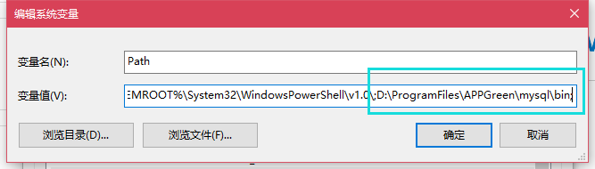
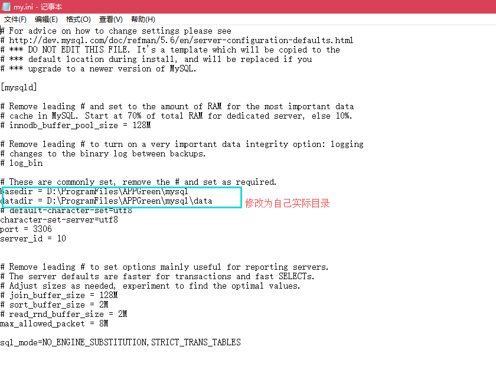
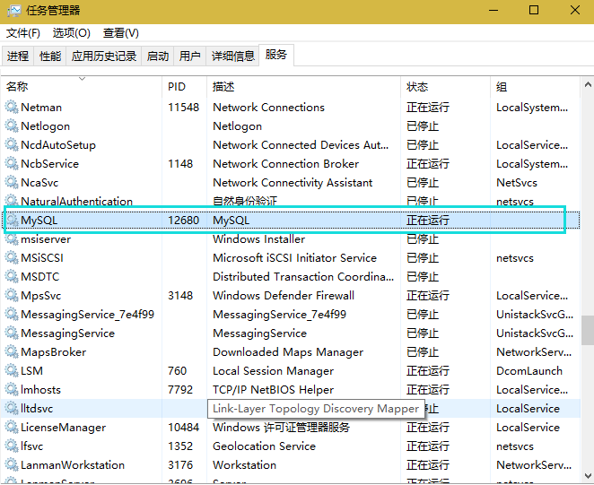

MySQL绿色版免安装教程
1、配置环境变量

2、服务配置
2.1、修改配置
打开解压文件目录，找到后缀名为.ini的文件，复制一份更名为my.ini
修改配置：

2.2、安装服务
my.ini文件配置好后就可以在cmd中安装mysqld服务了，在cmd中运行命令
命令：
mysqld --install MySQL --defaults-file="D:\Program Files(x86)\MySql\my.ini"
其中的MySQL是安装服务器的名称，可以指定任何名称。安装完成后会提示下面的信息：Service successfully installed，即表示安装成功。
2.3、查看服务

附件
1、配置文件my.ini
[mysqld]
# Remove leading # and set to the amount of RAM for the most important data
# cache in MySQL. Start at 70% of total RAM for dedicated server, else 10%.
# innodb_buffer_pool_size = 128M
# Remove leading # to turn on a very important data integrity option: logging
# changes to the binary log between backups.
# log_bin
# These are commonly set, remove the # and set as required.
basedir = D:\\ProgramFiles\\APPGreen\\mysql
datadir = D:\\ProgramFiles\\APPGreen\\mysql\\data
# default-character-set=utf8
character-set-server=utf8
port = 3306
server_id = 10
# Remove leading # to set options mainly useful for reporting servers.
# The server defaults are faster for transactions and fast SELECTs.
# Adjust sizes as needed, experiment to find the optimal values.
# join_buffer_size = 128M
# sort_buffer_size = 2M
# read_rnd_buffer_size = 2M
max_allowed_packet = 8M
sql_mode=NO_ENGINE_SUBSTITUTION,STRICT_TRANS_TABLES